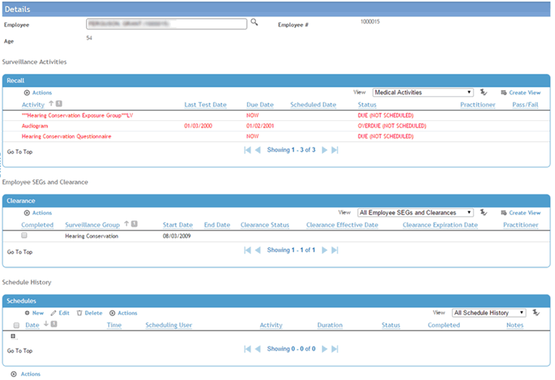

In the Employee View tab of the schedule, or from the Surveillance Recalls form, you can view the employee’s activities and recalls, and schedule new activities.
In the Appointments module, open the Employee View tab; or
In the Occupational Health menu, click Surveillance Recalls.
Select an employee.

The top section displays unscheduled activities for the selected employee showing the status (due now, due now (not scheduled), overdue, overdue (not scheduled), or not scheduled) for specific activities related to their recall group. The Due Date is the date that the activity is due to be performed, based on the activity’s start and end dates and the gap between standard recall activities, as specified in the ExposureGroup look-up table. The recall date for an activity is the earliest recall date for all SEGs that the activity appears in. If the activity has no recall date (i.e. is due now) but the start date is in the future, then the due date is the effective date. If the recall date for an activity in the future is beyond the end date, then recall date is blank.
If the activity is linked to a module (defined in the ScheduleActivity look-up table), Cority will calculate the next recall date when the activity is completed. If the activity is not linked to a module, Cority will update the next recall date when the Completed checkbox is selected.
The middle section contains any SEGs the employee is part of. Once all the mandatory activities for an SEG have been completed, the Completed checkbox in the SEG list will be selected.
Any activity that is due now, or is overdue, will appear in red. Any SEGs that have one or more components that are not up to date (overdue or due now) will also appear in red.
The bottom section displays a history of the employee’s appointments.
To schedule an activity, in the Schedule History area, click New. This opens the Schedule Entry form. Enter information as described in Scheduling Appointments. The activity is scheduled and appears in the other schedule views.